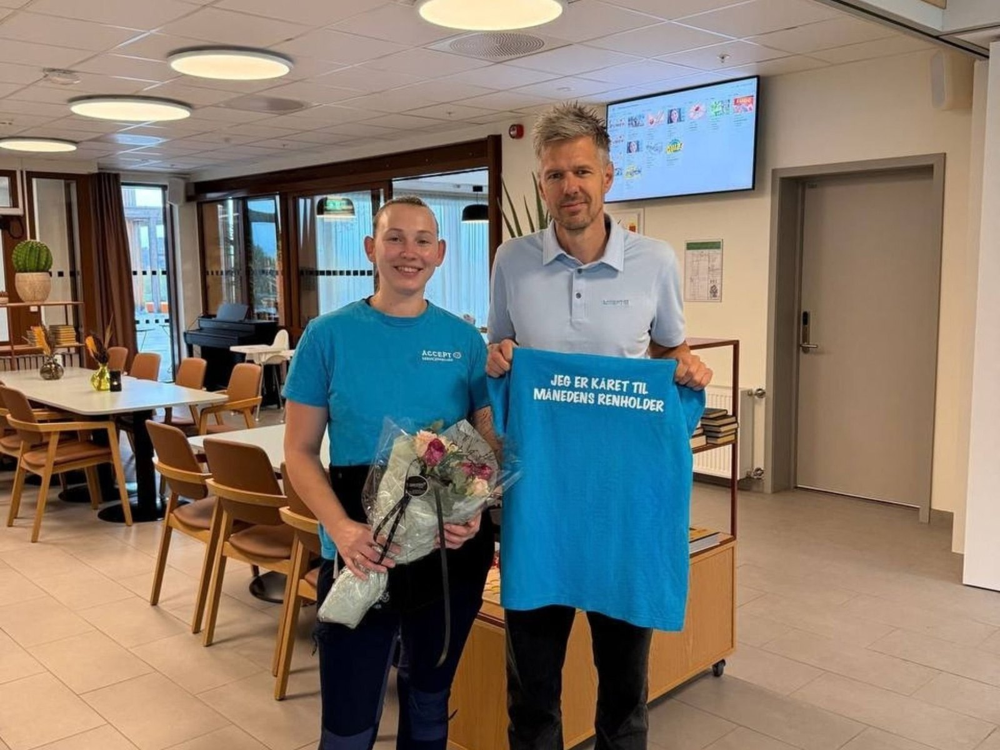

Fasade- og vindusvask · Sandefjord og Vestfold
Rene fasader, vinduer og uteområder i hele Vestfold
Fasadevask 24 AS utfører effektiv og skånsom vask av eneboliger, borettslag og næringsbygg i Sandefjord og Vestfold med profesjonelt rentvannssystem.

Dette hjelper vi deg med
Vi leverer gjennomtenkte løsninger med høy faglig standard, forutsigbarhet og personlig oppfølging.
-
01
Skånsom fasadevask (Softwash)
Effektiv fjerning av grønske, svertesopp og trafikkfilm fra tre-, mur- og platefasader uten skadelig høytrykk.
-
02
Vindusvask med oppvarmet rentvann
Strekfri vask av vinduer og glassfasader helt opp i høyden fra bakkenivå med avionisert rentvann – helt uten kjemikalier.
-
03
Vask av terrasse og uteområder
Rens av treterrasser, belegningsstein, mur og trapper som gir uteplassen et nytt løft før sesongen.
-
04
Avtaler for borettslag og bedrifter
Skreddersydde vedlikeholdsplaner for sameier, borettslag og næringsbygg som forlenger malingsintervallene og hever inntrykket.
Om Fasadevask 24 AS
Fasadevask 24 AS i Sandefjord hjelper boligeiere, styrer i borettslag og bedrifter i hele Vestfold med å ta vare på bygningsmassen.
Vi kommer gjerne på en gratis og uforpliktende befaring, vurderer fasadens tilstand og gir deg et ryddig pristilbud før arbeidet starter.
- Vestfold – Lokal og rask respons
- Rentvannssystem – Skånsomt i høyden
- Gratis befaring – Fast forhåndspris
Slik jobber vi
En ryddig og oversiktlig prosess fra første henvendelse til ferdig leveranse.
-
STEG 01
Uforpliktende dialog
Ta kontakt via skjema, e-post eller telefon og fortell kort hva du ønsker hjelp til.
-
STEG 02
Kartlegging og løsningsforslag
Vi går gjennom behovene dine og gir deg konkrete råd, prisoverslag eller avtaler befaring.
-
STEG 03
Trygg gjennomføring
Arbeidet eller leveransen utføres til avtalt tid og pris, med tett oppfølging hele veien.
Klar for en uforpliktende prat med Fasadevask 24 AS?
Send oss en melding i dag, så hjelper vi deg med rådgivning, priser eller et tilbud tilpasset dine behov.
Ta kontakt
Vi ser frem til å høre fra deg. Ta kontakt direkte eller bruk skjemaet, så svarer vi deg raskt.
- E-postthomas@fasadevask24.no
- OmrådeFasade- og vindusvask · Sandefjord og Vestfold
- ResponstidVi svarer normalt innen én arbeidsdag